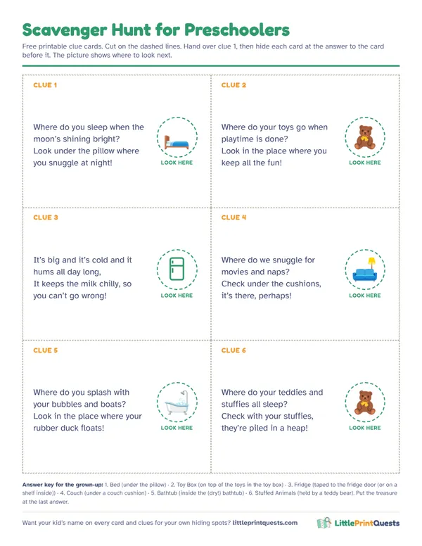

Scavenger hunt for preschoolers (ages 3 to 5)
Kids who can’t read yet still love a treasure hunt. The trick is picture clues, a short trail and a grown-up who reads the rhyme while the kid gets to do the finding. Here’s a six-clue hunt that works for 3, 4 and 5 year olds.
Make a picture-clue hunt6 free rhyming clues
Read each rhyme out loud, then let your kid run to the spot. Add a little drawing of the answer to each card (a bed, a fridge) so they can “read” it themselves.
Clue 1
Where do you sleep when the moon’s shining bright?
Answer: Bed. Hide it: Under the pillow.
Look under the pillow where you snuggle at night!Clue 2
Where do your toys go when playtime is done?
Answer: Toy Box. Hide it: On top of the toys in the toy box.
Look in the place where you keep all the fun!Clue 3
It’s big and it’s cold and it hums all day long,
Answer: Fridge. Hide it: Taped to the fridge door (or on a shelf inside).
It keeps the milk chilly, so you can’t go wrong!Clue 4
Where do we snuggle for movies and naps?
Answer: Couch. Hide it: Under a couch cushion.
Check under the cushions, it’s there, perhaps!Clue 5
Where do you splash with your bubbles and boats?
Answer: Bathtub. Hide it: Inside the (dry!) bathtub.
Look in the place where your rubber duck floats!Clue 6
Where do your teddies and stuffies all sleep?
Answer: Stuffed Animals. Hide it: Held by a teddy bear.
Check with your stuffies, they’re piled in a heap!
Free printable clue cards
All 6 clues on one sheet with picture hints for pre-readers, dashed cut lines and an answer key for the grown-up doing the hiding. Print it, cut it, hide it.

Download the free printable (PDF)
What works at this age
- Picture on every clue. A drawing of the spot turns the card into something a pre-reader can solve alone, which is the whole thrill.
- Five or six spots. Fifteen minutes is a great hunt for a three year old. Stop while they still want more.
- Hide in plain sight. Clues should poke out of the hiding spot. Hot and cold hints are fine when they get stuck.
- Same rooms first. Start with spots in the room they’re in, then move to the next room. Long trips across the house lose little ones.
- Everybody wins. With siblings, take turns finding each clue so the older one doesn’t sweep the trail.
A no-clue color hunt
For a quick game with no setup, call out a color and let them run to find something that color: something red, something blue, something soft, something round. Five finds and it’s done. Our printed hunts include a picture hunt and a look-around hunt like this for a second round on another day.
For the youngest (2 and 3 year olds)
Hide the clues in just one room and walk the trail together, holding hands. Let them pull each card out and hand it to you to read. The finding is the fun, not the solving.
Want it printed with pictures?
Our little kids version (ages 3 to 5) has a picture of the hiding spot on every clue card, big cut lines and your kid’s name on every page, plus a story to read before the first clue and a certificate at the end. It arrives by email in minutes.
Questions
Can a 3 year old do a scavenger hunt?
Yes, with picture clues and a grown-up to read the rhymes. Keep it to five or six spots close together, about 10 to 15 minutes.
How do you do a scavenger hunt for kids who can’t read?
Put a picture of the hiding spot on each clue card. The grown-up reads the rhyme for fun, and the kid matches the picture to the place.
What prize works for preschoolers?
Something small they can use right away: stickers, a bath toy, a snack, or a new book to read together.
More hunt ideas
- Birthday party hunt
- Ages 6 to 8
- Thanksgiving hunt
- Classroom hunt
- Apartment Scavenger Hunt
- Indoor Scavenger Hunt for a House
- Backyard Scavenger Hunt
- Dinosaur hunt
- Superhero hunt
- Pirate hunt
- Outer Space hunt
- Princess & Knights hunt
- Unicorn hunt
- Mermaid hunt
- Construction hunt
- Pet Vet hunt
- Easter hunt
- Halloween hunt
- Christmas hunt
- Valentine’s hunt
- Firefighter hunt
- Ice Kingdom hunt
- Race Car hunt
- Pizza Shop hunt
- Burger Shop hunt
- Grocery Store hunt
- Post Office hunt
- Library hunt
- Police Station hunt
- Dentist hunt
- Pet Shop hunt
- Coffee Shop hunt
- Italian Restaurant hunt
- Auto Shop hunt
- Play Kitchen hunt
- Doctor hunt
- Puppet Theater hunt
- Secret Agent hunt
- Dress-Up hunt
- Ice Cream hunt
- Airport hunt